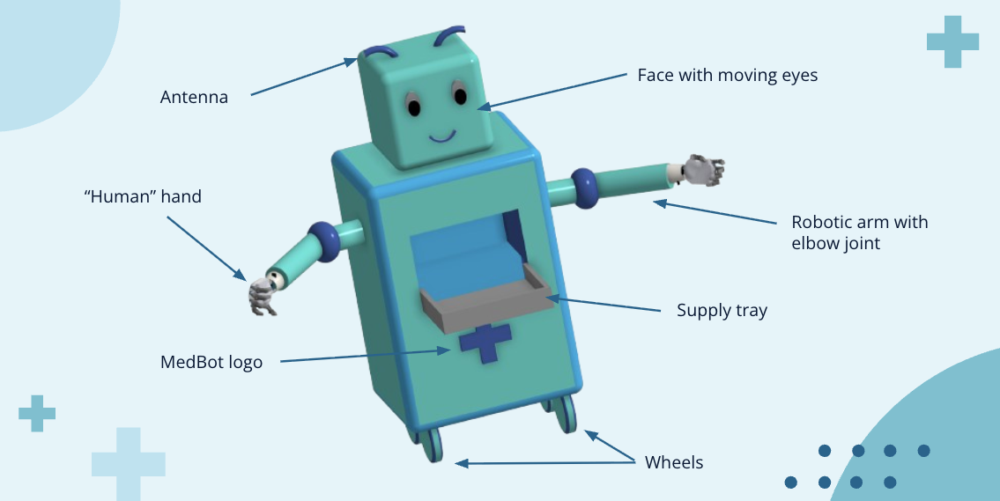
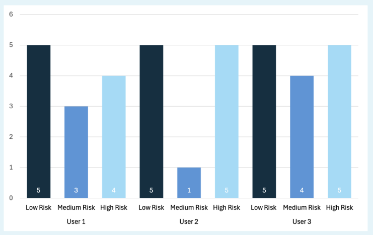
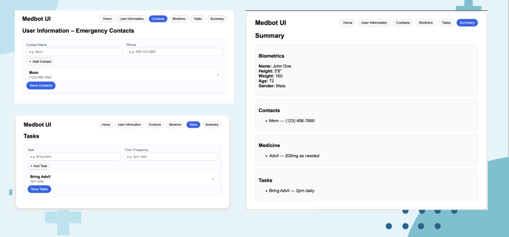

Designing a home medical robot around trust, accessibility, and independence.
MedBot is a home medical robot concept designed to help older adults live more independently. The system
combines a mobile robot, a health-tracking wearable, and a setup interface for medications, contacts, and
health information.
Our team developed the initial concept, tested the setup interface in a usability study, and revised the
robot and UI based on participant feedback.
02 · Technical approach
Start with user needs, test the interaction, then iterate the robot system.
Problem
Design a home medical robot for older adults living independently, with strong support for emergency
response, medication reminders, and accessible interaction.
Control strategy
We evaluated learnability, efficiency, satisfaction, and trust through a think-aloud usability study
and trust ratings across low-, medium-, and high-risk scenarios.
03 · Photos + diagrams
Robot concept, interface design, and usability findings.

Initial MedBot concept showing the mobile robot, medical supply storage, arms, friendly face, and wearable tracking concept.

Graph summarizing usability study findings: users trusted the robot most in low-risk and high-risk scenarios, older adult participants found the interface too complex, and several questioned the value of the extra wristband.

User interface screens for emergency contacts, tasks, medication information, and summary.
06 · Reports
Documentation and final presentation.
MedBot final report
Written report covering the problem, study, findings, design updates, and future work.